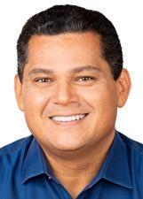
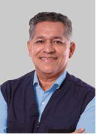
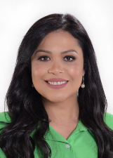

Amapá
Quem ocupa os cargos hoje e quem assume em 2027.
Resultado provisórioTSE, capturado em 29/10/2026
Poder Executivo
Administra o governo e executa as leis: saúde, educação, segurança, estradas e o orçamento.
Governador
ClécioSOLIDARIEDADE · 222.168 votos · eleito em 2022★ Novato›Quem comanda cada cidade do estado.
Poder Legislativo
Cria as leis, aprova o orçamento e fiscaliza o Executivo.
Senadores (3)

DaviUNIÃO · 196.087 votos · eleito em 2022✓ Reeleito›Lucas BarretoPTB · 128.186 votos★ Novato no Senado›RandolfeREDE · 264.798 votos · eleito em 2018✓ Reeleito›Deputados federais (8)
Bancada federal por partido
8 cadeiras de Amapá
- PDT225%
- MDB112%
- PCDOB112%
- PL112%
- PP112%
- PSOL112%
- REPUBLICANOS112%
Do partido com mais cadeiras para o com menos, não por posição política. Cada partido usa a sua cor de marca.
Deputados federais (8): buscar e ver a lista

Dorinaldo MalafaiaPDT · 11.473 votos★ Novato na Câmara›JosenildoPDT · 27.112 votos★ Novato na Câmara›Paulo LemosPSOL · 9.240 votos · eleito em 2022★ Novato na Câmara›Professora MarcivaniaPCDOB · 13.245 votos✓ Reeleito›Vinicius GurgelPL · 13.253 votos✓ Reeleito›Deputados estaduais e distritais (24)
Assembleia por partido
24 cadeiras de Amapá
- PDT312%
- UNIÃO312%
- MDB28%
- PODE28%
- PSD28%
- REDE28%
- SOLIDARIEDADE28%
- CIDADANIA14%
- PL14%
- PP14%
- PROS14%
- PT14%
- PTB14%
- PV14%
- REPUBLICANOS14%
Do partido com mais cadeiras para o com menos, não por posição política. Cada partido usa a sua cor de marca; cinza é partido sem cor registrada na fonte.
Deputados estaduais e distritais (24): buscar e ver a lista

Edna AuzierPSD · 5.222 votos · eleito em 2022✓ Reeleito›Fabricio FurlanREDE · 4.689 votos↺ Retorno›HildegardUNIÃO · 6.527 votos★ Novato›Jack JKSOLIDARIEDADE · 12.539 votos✓ Reeleito›Jaime PerezPTB · 5.779 votos✓ Reeleito›Jesus PontesPDT · 11.069 votos · eleito em 2022✓ Reeleito›Jory OeirasPP · 6.342 votos · eleito em 2022✓ Reeleito›Junior FavachoMDB · 9.698 votos✓ Reeleito›Liliane AbreuPV · 7.202 votos · eleito em 2022★ Novato›Lorran BarretoPSD · 4.735 votos★ Novato›Pastor OliveiraREPUBLICANOS · 6.897 votos · eleito em 2022✓ Reeleito›Paulo NogueiraPT · 6.276 votos · eleito em 2022★ Novato›R NelsonPL · 3.898 votos★ Novato›Rayfran BeirãoPROS · 4.154 votos · eleito em 2022★ Novato›RobertoUNIÃO · 6.681 votos↺ Retorno›Telma NeryCIDADANIA · 5.825 votos✓ Reeleito›Zeneide CostaPODE · 11.547 votos · eleito em 2022★ Novato›Os eleitos de cada cidade do estado.
Poder Judiciário
Julga os conflitos e garante que as leis sigam a Constituição.
Os desembargadores do Tribunal de Justiça e do Tribunal Regional Eleitoral. Não são eleitos.
Poder Executivo
Administra o governo e executa as leis: saúde, educação, segurança, estradas e o orçamento.
Governador
DR. FurlanPSD · 281.595 votos★ Novato›Quem comanda cada cidade do estado.
Poder Legislativo
Cria as leis, aprova o orçamento e fiscaliza o Executivo.
Senadores (3)
DaviUNIÃO · 196.087 votos · eleito em 2022✓ Reeleito›Lucas BarretoPSD · 213.948 votos✓ Reeleito›Rayssa FurlanPODE · 264.799 votos★ Novato no Senado›Deputados federais (8)
Bancada federal por partido
8 cadeiras de Amapá
- UNIÃO338%
- PDT225%
- PCDOB112%
- PL112%
- PODE112%
Do partido com mais cadeiras para o com menos, não por posição política. Cada partido usa a sua cor de marca.
Deputados federais (8): buscar e ver a lista
Deputados estaduais e distritais (24)
Assembleia por partido
24 cadeiras de Amapá
- REPUBLICANOS521%
- UNIÃO521%
- PDT312%
- MDB28%
- PODE28%
- PSD28%
- REDE28%
- PL14%
- PP14%
- PT14%
Do partido com mais cadeiras para o com menos, não por posição política. Cada partido usa a sua cor de marca.
Deputados estaduais e distritais (24): buscar e ver a lista
Os eleitos de cada cidade do estado.
Poder Judiciário
Julga os conflitos e garante que as leis sigam a Constituição.
Os desembargadores do Tribunal de Justiça e do Tribunal Regional Eleitoral. Não são eleitos.
Como ler
★ Novato Primeiro mandato nesta casa (Câmara ou Senado).
✓ Reeleito Já estava no cargo e foi eleito de novo.
↺ Retorno Já teve mandato, mas estava fora.
Sem selo Não conseguimos ligar a pessoa a um mandato anterior. Isso não quer dizer que seja novata: simplesmente não afirmamos nada.
Provisório Só é confirmado na diplomação.